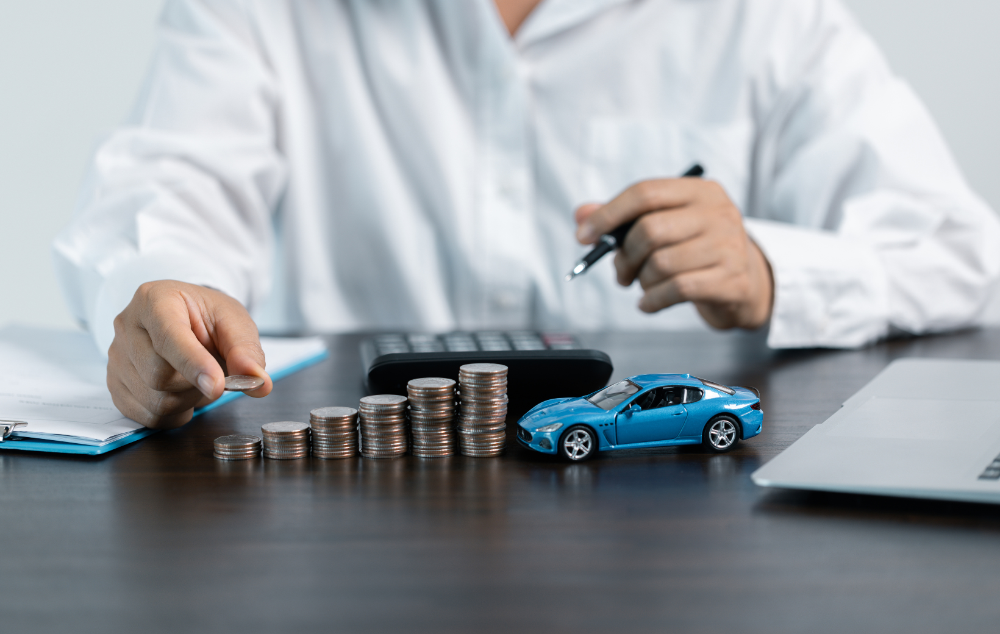
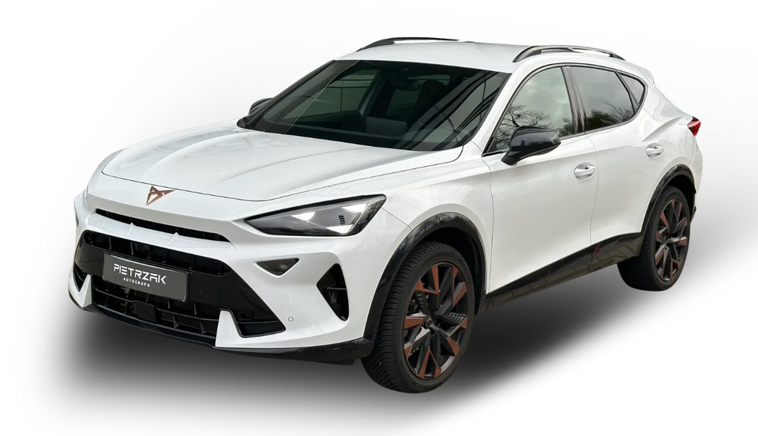
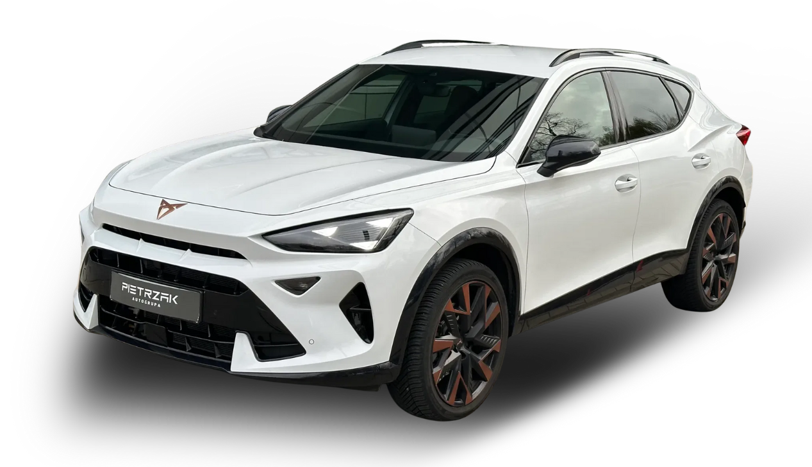
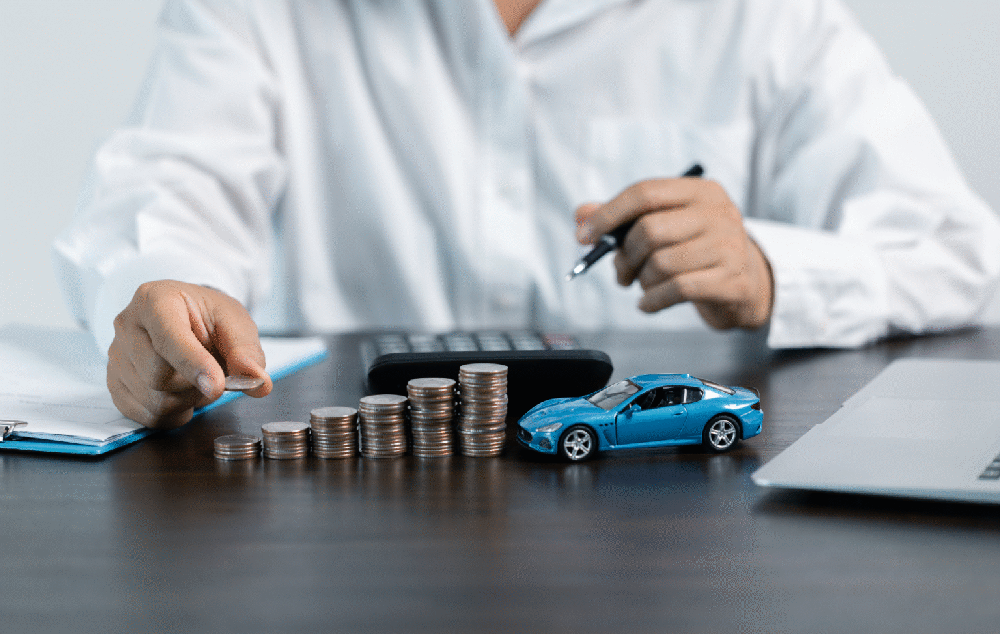
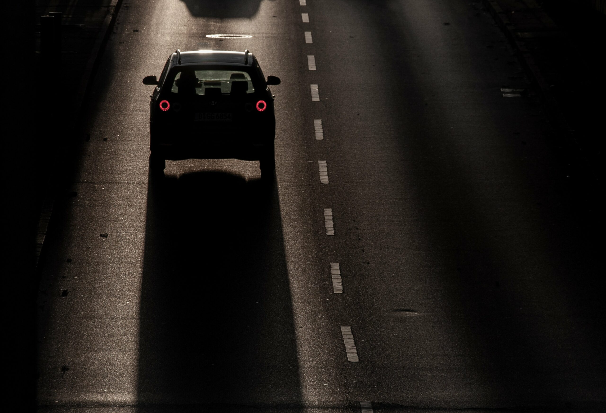

Przesun suwak w lewo i w prawo. Po prawej jest wersja "na telefon" - najmocniej zmniejszona, wiec jesli tu nie widac roznicy, w zestawie A tym bardziej jej nie bedzie.





| plik | wymiary | dzis | A pelny | B telefon | B WebP |
|---|---|---|---|---|---|
| slajd-glowna.png | 1640x1040 | 1743 | 98 | 45 | 23 |
| GLOWNA-cupra.png | 1267x728 | 739 | 697 | 462 | 83 |
| slajd-glowna-1536x974.png | 1536x974 | 699 | 613 | 267 | 83 |
| wal_172619_ii-street-7583585-scaled.jpg | 2560x1748 | 460 | 425 | 59 | 37 |
| riedelmeier-bmw-1216469-scaled.jpg | 2560x1707 | 435 | 405 | 72 | 46 |
| hasselqvist-fog-8208493-scaled.jpg | 2560x1440 | 392 | 373 | 44 | 21 |
| slajd-glowna-1024x649.png | 1024x649 | 330 | 286 | 254 | 74 |
| ZET_5187-2048x1363.jpg | 2048x1363 | 314 | 233 | 56 | 32 |
| wal_172619_ii-street-7583585-2048x1398.jpg | 2048x1398 | 298 | 275 | 58 | 36 |
| riedelmeier-bmw-1216469-2048x1365.jpg | 2048x1365 | 288 | 269 | 72 | 45 |
| hasselqvist-fog-8208493-2048x1152.jpg | 2048x1152 | 222 | 212 | 44 | 21 |
| GLOWNA-cupra-1024x588.png | 1024x588 | 212 | 185 | 165 | 100 |
| slajd-glowna-768x487.png | 768x487 | 198 | 170 | 170 | 53 |
| ZET_5187-1536x1022.jpg | 1536x1022 | 192 | 134 | 55 | 31 |
| riedelmeier-bmw-1216469-1536x1024.jpg | 1536x1024 | 173 | 161 | 71 | 43 |
| wal_172619_ii-street-7583585-1536x1049.jpg | 1536x1049 | 167 | 155 | 57 | 33 |
| GLOWNA-cupra-768x441.png | 768x441 | 126 | 110 | 110 | 66 |
| hasselqvist-fog-8208493-1536x864.jpg | 1536x864 | 114 | 110 | 44 | 20 |
| ZET_5187-1024x681.jpg | 1024x681 | 105 | 63 | 52 | 29 |
| riedelmeier-bmw-1216469-1024x683.jpg | 1024x683 | 86 | 81 | 68 | 39 |
| ZET_5187-768x511.jpg | 768x511 | 74 | 37 | 37 | 20 |
| wal_172619_ii-street-7583585-1024x699.jpg | 1024x699 | 71 | 66 | 53 | 28 |
| hasselqvist-fog-8208493-1024x576.jpg | 1024x576 | 53 | 51 | 42 | 19 |
| riedelmeier-bmw-1216469-768x512.jpg | 768x512 | 53 | 49 | 49 | 28 |
| slajd-glowna-300x190.png | 300x190 | 40 | 34 | 34 | 11 |
| wal_172619_ii-street-7583585-768x524.jpg | 768x524 | 38 | 36 | 36 | 18 |
| ZET_5187-300x200.jpg | 300x200 | 37 | 8 | 8 | 4 |
| hasselqvist-fog-8208493-768x432.jpg | 768x432 | 31 | 30 | 30 | 14 |
| GLOWNA-cupra-300x172.png | 300x172 | 26 | 21 | 21 | 14 |
| riedelmeier-bmw-1216469-300x200.jpg | 300x200 | 11 | 10 | 10 | 7 |
| hasselqvist-fog-8208493-300x169.jpg | 300x169 | 7 | 7 | 7 | 3 |
| wal_172619_ii-street-7583585-300x205.jpg | 300x205 | 6 | 6 | 6 | 3 |
| razem | 7740 | 5411 | 2558 | 1084 |